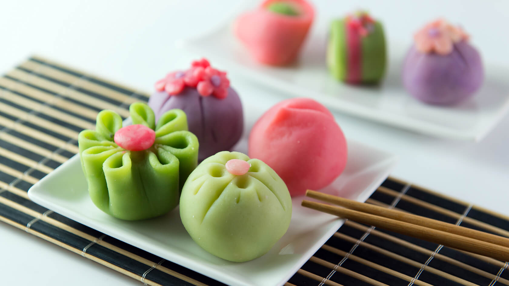
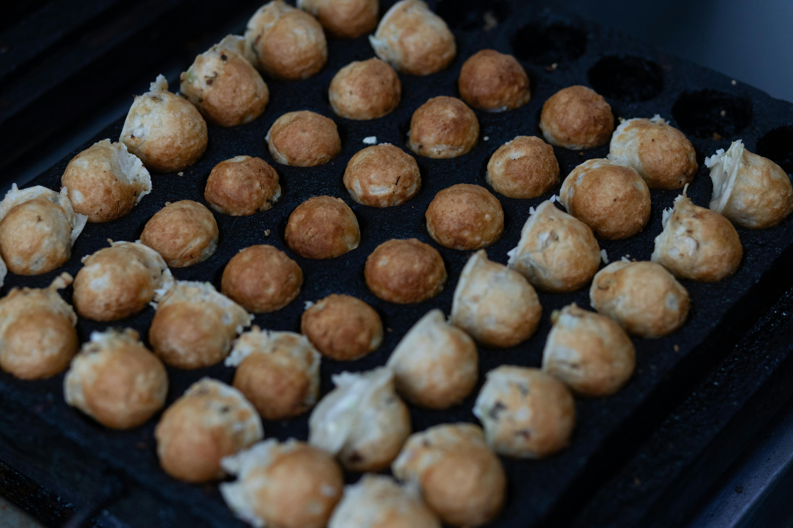
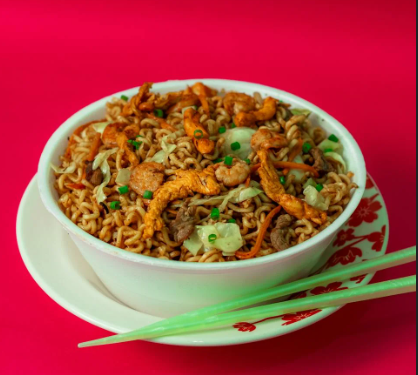
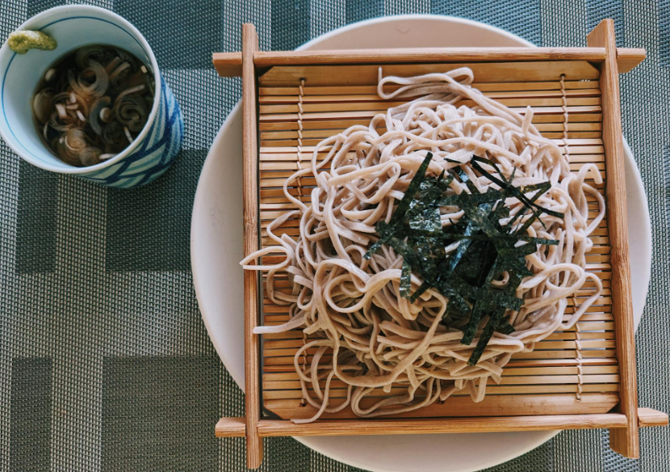
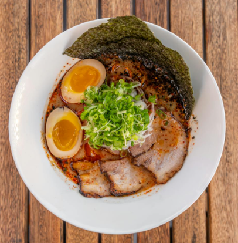
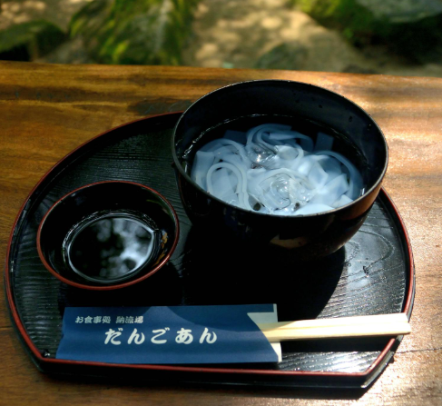

Available products

Here are the products we currently have available. Each item reflects the
essence of Japanese culture, from its rich traditions to its culinary delights.
Itadakimasu!
Yakiniku 焼肉

The term "yakiniku" literally means "grilled meat" and originated in the
19th century, inspired by Korean and Japanese techniques. Perfect for
sharing, Yakiniku is more than a meal—it’s a social experience.
Shio Ramen 塩ラーメン

Originating in Hakodate, on Hokkaido Island, Shio Ramen is celebrated
for its balance and simplicity, offering the comforting soul of Japanese
cuisine in every spoonful.
Takoyaki たこ焼き

Originating from Osaka, these savory treats have become one of Japan’s
most iconic street foods. Each takoyaki offers a crispy exterior and a
soft, flavorful interior. Perfect as a starter or snack, these little
delicacies embody the vibrant essence of Japanese street culture.
Gyoza 餃子

Filled with a juicy mix of ground pork, garlic, ginger, and vegetables,
they’re steamed and then lightly pan-fried to create the perfect texture.
Served with a dipping sauce made of soy sauce, vinegar, and sesame oil,
these dumplings are the perfect harmony of tradition and taste.
Bento Box 弁当（べんとう）

Each box includes perfectly steamed rice, crispy tempura, fresh salad,
pickles, and proteins like breaded shrimp or chicken prepared in Japanese
style. Originating in the Kamakura era, the bento box represents the care
and attention to detail that defines Japanese cuisine.
Udon うどん

The noodles are thick, chewy and wheat, with a broth with light soy sauce-based.
Pickles, and proteins like breaded shrimp or chicken prepared in Japanese
style. Originating in the Kamakura era, the bento box represents the care
and attention to detail that defines Japanese cuisine.
Yakisoba 焼きそば

Wheat-based noodles, similar to ramen but with a stir-fried veggies,
pork and sweet-savory sauce, breaded shrimp or chicken prepared in Japanese
style. Originating in the Kamakura era, the bento box represents the care
and attention to detail that defines Japanese cuisine.
Soba 蕎麦

Buckwheat noodles (thin and brownish-gray), in a hot broth or cold with
dipping sauce (zaru soba). Also breaded shrimp or chicken prepared in Japanese
style. Originating in the Kamakura era, the bento box represents the care
and attention to detail that defines Japanese cuisine.
Tsukemen つけ麺

Thick noodles served cold with a separate rich dipping broth, usually more
concentrated than ramen. Also breaded shrimp or chicken prepared in Japanese
style. Originating in the Kamakura era, the bento box represents the care
and attention to detail that defines Japanese cuisine.
Somen 素麺

Very thin white wheat noodles, served cold with light dipping sauce (tsuyu)
concentrated than ramen. Also breaded shrimp or chicken prepared in Japanese
style. Originating in the Kamakura era, the bento box represents the care
and attention to detail that defines Japanese cuisine.